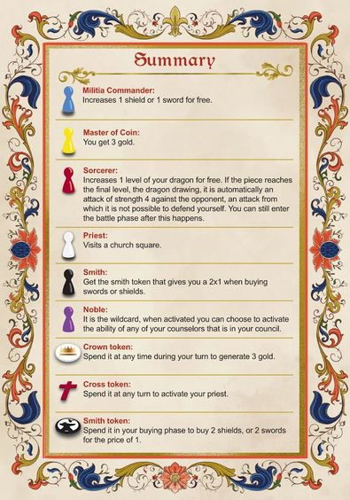

Batalladecoronas
Board Game Arena 官方规则文档
Gameplay - The game progresses in turns, divided into three phases that must be resolved in the following order:
- Decision Phase
- At the beginning of your turn, always roll both dice. Choose one of the results you get when rolling them to assign a counselor to the Council area, it means taking a counselor pawn (of the color you want) and placing it on the seat of the council area with the same number as the result you chose. In this way, you will be assigning a counselor to that number. The result of the other rolled die is chosen to generate gold, i.e., the die you don’t choose to activate a counselor, is chosen to generate gold.
- Buying Phase
- Once the decision phase is completed, you will then move on to the buying phase, in which you can use all the gold you have available in your treasure area to buy whatever you want or can. When you no longer want or can buy anything else, you must end your buying phase. You can spend gold on increasing your defense (shields), your attack (swords), or growing your dragon.
- Battle Phase
- Once the buying phase is completed, you can optionally attack the opposite kingdom. If you decide to do so, a battle phase will start.
- First, each player will roll the die. Whoever gets the highest result will win the battle.
- Attacker Wins
- If the attacking person gets the highest number, the attacker wins the battle, so the shields of the defender will be affected.
- Next, the the lower value dice is subtracted from the higher value dice for a result.
- The result of this subtraction will indicate how many swords the attacking kingdom must spend to reduce the shields of the defending kingdom.
- The result indicates how many swords the attacker may lose in order to decrease the defender's shields. For each sword lost, the defender must decrease their shields.
- Defender Wins
- Conversely, if the defending person gets the highest number, the defense wins, so the swords of the attacker will be affected: in such a case, the subtraction must be done and the result will be the number of swords that the attacking kingdom will lose.
- Ties
- Nobody gains or loses any swords or shields.
- Rerolls
- Every time you roll a die in battle, either to attack or defend, you will have the option to reroll your die if the result does not favor you, but to do so you must spend gold. The first time you reroll your die it will cost 1 gold. The second time you reroll your die it will cost 2 gold. The third time it will cost 3 gold, and so on. First, you pay, then you can reroll.
- Gaining Gems from Battle
- If after the attack, the defending castle reaches the 0 square of its defense militia (shields), the attacking castle will claim one of the gems of the defending kingdom, thus it will be 1 step closer to winning.
- When obtaining a gem, take any gem from the power area of the opposite castle and place it in the empty square farthest to the right of the treasure area. Notice that, in this way, the more gems you win, the less the maximum gold you can have and spend, as each gem you win will cover a square of your treasure area.
- If after the attack, the defending castle reaches the 0 square of its defense militia (shields), the attacking castle will claim one of the gems of the defending kingdom, thus it will be 1 step closer to winning.
- Crown & Cross Tokens
- The winner gains the crown token and the loser gains the cross token.
- Attacker Wins
- First, each player will roll the die. Whoever gets the highest result will win the battle.
- Once the buying phase is completed, you can optionally attack the opposite kingdom. If you decide to do so, a battle phase will start.
